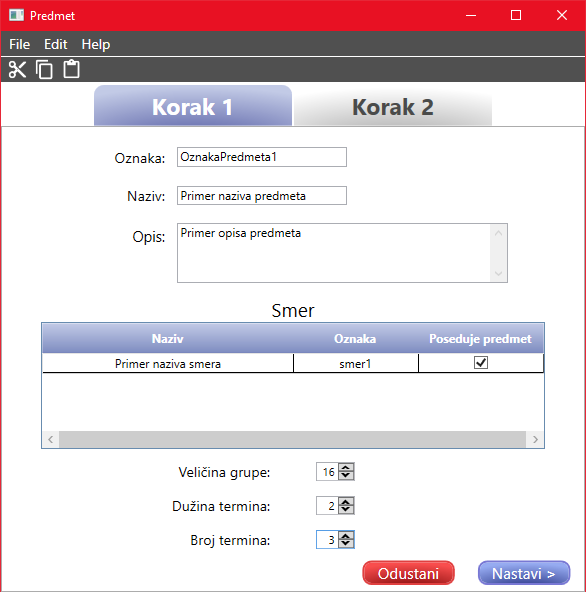
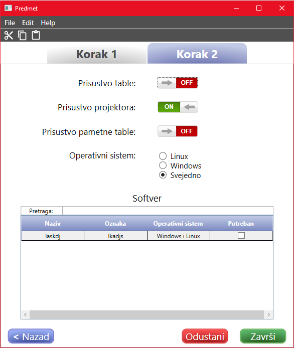

Dodavanje/izmena predmeta
Da biste uneli novi predmet potrebno je popuniti sva polja.
Za prelazak izmedju tabova se koriste dugmići Nastavi, za koje je prečica Ctrl+N i Nazad,
sa prečicom Ctrl+B.

Sadržaj polja za oznaku mora da bude jedinstven, odnosno dva predmeta ne mogu imati istu oznaku.
Polje za naziv predmeta treba da sadrži naziv predmeta koji se unosi.
U polju za opis se unosi opis predmeta.
Svaki predmet mora imati smer kom pripada. Smer se bira tako sto se štiklira jedna stavka iz ponuđene tabele.
Veličina grupe predstavlja broj studenata koji će slušati predmet u jednom terminu. Ono može da se podešava uz
pomoć strelica ili ručnim unosom broja uz pomoć tastature. Broj koji se unosi ne sme biti 0 ili manji od 0, u tom slučaju
će se njegova vrednost automatski postaviti na 1.
Dužina termina predstavlja trajanje jednog termina predmeta, izraženog u satima. Dužina termina može da se menja
uz pomoć strelica ili ručnim unosom broja uz pomoć tastature. Broj koji se unosi ne sme biti 0 ili manji od 0, u tom slučaju
će se njegova vrednost automatski postaviti na 1.
Polje za broj termina treba da sadrži broj termina u jednoj nedelji koje predmet zahteva. Ono može da se menja
uz pomoć strelica na tastaturi ili direktnim unosom broja. Broj koji se unosi ne sme biti 0 ili manji od 0, u tom slučaju
će se njegova vrednost automatski postaviti na 1.

Prisustvo table označava da li je potrebna tabla da bi se održavala nastava za predmet. Ukoliko je ona potrebna,
vrednost treba da bude ON, a ukoliko nije, treba da bude OFF.
Prisustvo projektora označava da li je potreban projektor za izvođenje nastave predmeta. Ukoliko je on potreban,
vrednost treba da bude ON, a ukoliko nije, treba da bude OFF.
Prisustvo pametne table označava da li je potrebna pametna tabla da bi se izvodila nastava iz predmeta. Ukoliko je
ona potrebna, vrednost treba da bude ON, a ukoliko nije, treba da bude OFF.
Operativni sistem predstavlja operativni sistem koji predmeta zahteva.
Softver predstavlja sve potrebne softvere koji su neophodni za održavanje nastava predmeta. Može da bude označen jedan
ili više softvera. Tabela ponuđenih softvera zavisi od izabranog operativnog sistema. Softveri se biraju tako što se
štikliraju svi željeni redovi.
Da bi podaci ostali sačuvani kliknite Završi ili prečicu Ctrl+S.
Prilikom izmene već unesenog predmeta, takođe je potrebno sačuvati.
Ukoliko želite da odustanete od dodavanja/izmene, potrebno je kliknuti na Odustani ili prečicom na tastaturi
Ctrl+Q.
Link do početnog prozora za pomoć: Početna stranica